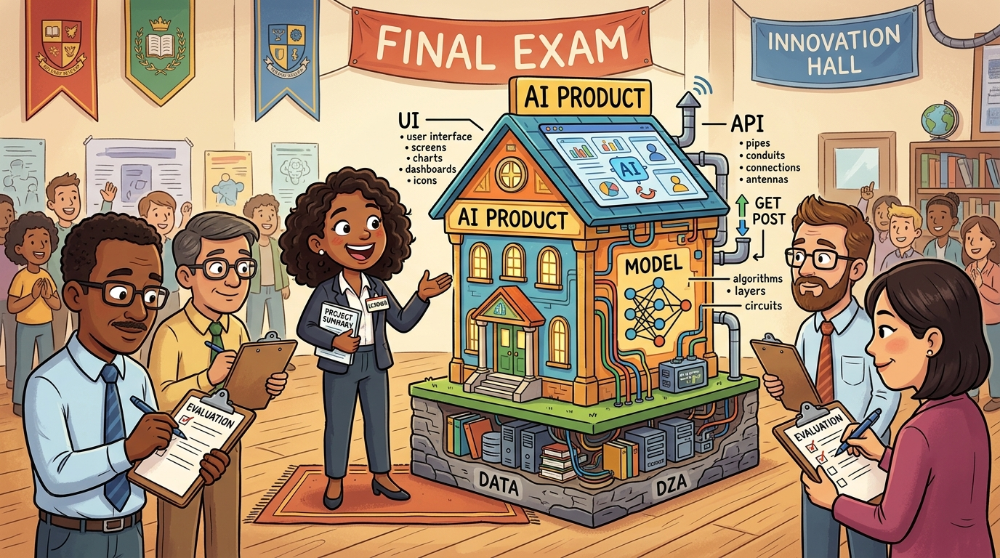

DataForge built an internal copilot for their 2,000-person data engineering team. Eighteen months later, they had 73% adoption and measurably faster pipeline development. Here is how they got there.
The hardest part was not building the AI. It was changing the culture to trust it.
Priya Sharma, VP Engineering at DataForge32.1.1 The Problem Space
DataForge is a mid-sized financial services company with a 2,000-person data engineering team responsible for building and maintaining data pipelines that feed risk models, regulatory reporting, and customer analytics. In 2023, their engineering leadership identified a critical bottleneck: pipeline development velocity had stalled even as headcount grew.
The symptoms were clear. Average time to production for a new data pipeline had grown from 3 weeks to 8 weeks over two years. Engineers spent 40% of their time on boilerplate code and documentation rather than creative problem-solving. Onboarding new engineers took 6 months before they could contribute meaningfully.
Data engineering work was dominated by repetitive tasks that did not require deep thinking but consumed the most time. The team was grown to solve a scaling problem, but the real bottleneck was efficiency, not capacity.

32.1.2 Discovery and Solution Design
The VP of Engineering launched a 6-week discovery phase with a small product team. They conducted 40 hours of user interviews with engineers at all levels and analyzed ticket data to understand where time was actually spent.
The research revealed three high-frequency use cases that consumed the most time. Pipeline scaffolding involved writing the repetitive boilerplate for new Apache Airflow DAGs, including error handling, retry logic, and logging. SQL optimization covered reviewing complex queries for performance issues, especially joins across multiple large tables. Documentation generation included writing and maintaining documentation for data lineage, schema definitions, and API contracts.
The team ruled out a general-purpose code assistant because engineers worked in a highly domain-specific environment with company-specific conventions, data dictionaries, and regulatory constraints. A generic copilot would generate code that violated internal standards or referenced non-existent data assets.
Generic AI coding tools failed in pilot because they hallucinated table names, used wrong schema versions, and ignored company-specific naming conventions. The copilot needed to be grounded in DataForge's actual data assets.
32.1.3 Architecture Decisions
The team chose a RAG architecture with four key components:
LLM: GPT-4o with 128k context, which performs well at code tasks but can be expensive for high-volume use.
Vector database: Pinecone, which is managed and reliable but adds latency to each query.
Context retrieval: A custom aggregation service that is complex to build but is critical for accuracy because it ensures the LLM has the right context about the user's current file, recent commits, related pipeline definitions, and relevant data catalog entries.
Evaluation: Combines LLM-as-Judge with unit tests, enabling fast iteration while still requiring human spot-checks to verify quality.
Knowledge base: 50,000 internal documents including data lineage diagrams, schema definitions, API documentation, and onboarding materials.
Eval harness: Suite of 200 test cases covering company conventions to ensure generated code follows internal standards.
32.1.4 Development and Iteration
The team used a phased rollout over 18 months:
The team used a phased rollout over 18 months. During months one through three, they conducted internal dogfood with 10 volunteer engineers, focusing only on the pipeline scaffolding use case. During months four through six, they extended to 100 engineers and added SQL optimization while expanding eval coverage to 50 test cases. During months seven through twelve, they completed full team rollout, added documentation generation, and grew the eval suite to 200 cases. During months thirteen through eighteen, they added mobile access, Slack integration, and advanced features like automated data lineage generation.
The team made a key decision at month 4: they would not try to automate entire pipeline creation. Instead, they focused on accelerating individual tasks within a workflow that remained human-directed. This reduced the stakes of AI errors and increased engineer trust.
32.1.5 Results and Metrics
After 18 months, the team measured significant improvements across multiple dimensions. Average pipeline time-to-production dropped from 8 weeks to 4 weeks, representing a fifty percent improvement. Engineer satisfaction measured by eNPS increased from plus twelve to plus forty-seven, a thirty-five point improvement that exceeded their target. Onboarding time to productivity was cut in half from 6 months to 3 months, allowing new engineers to contribute meaningfully much faster. Code review cycles decreased from an average of 3.2 to 1.8, a forty-four percent reduction. Adoption rate reached seventy-three percent, exceeding their target of sixty percent.
32.1.6 Key Lessons
DataForge learned that grounding is non-negotiable because enterprise AI that does not know your internal systems will fail, so investing in context aggregation early is essential. Starting narrow and expanding slowly proved effective as beginning with one use case and proving value built trust that made expansion easier. Measuring adoption, not just usage, mattered because active weekly users mattered more than login counts, and they tracked "meaningful interactions" where AI actually changed the outcome. Human oversight never disappeared because engineers always reviewed AI suggestions; the copilot accelerated their work but did not replace their judgment. Cultural change takes time because the 18-month timeline included 6 months of pure change management before measurable adoption appeared.
High adoption rates do not equal high impact. Some teams celebrate when a certain percentage of users log in, but that is vanity metrics. Users might be logging in but not using AI outputs, or using them without verifying, or using them for low-value tasks. Track meaningful interactions where AI actually changes outcomes, not just activity metrics. DataForge's lesson: their 73% adoption was meaningful because they tracked whether AI actually accelerated pipeline development, not just whether engineers clicked on the copilot.